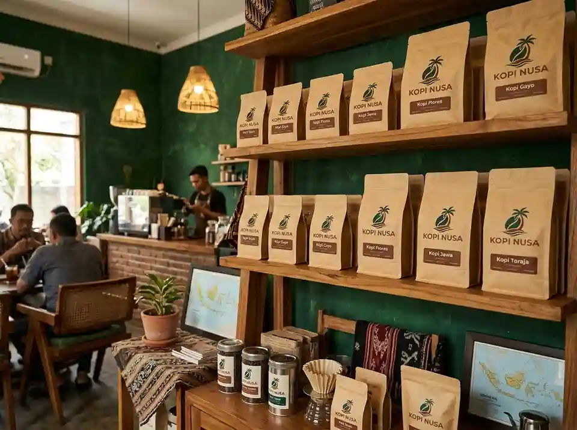
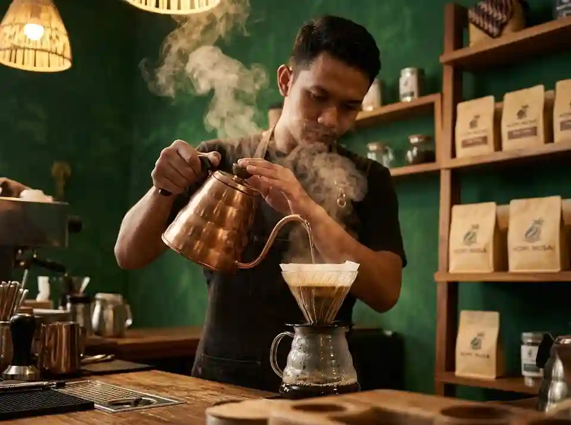

Galeri Kopi Nusa
Pilih produk sesuai kebutuhan seduh harian, kantor, atau hadiah.
Media Usaha


Instrumen Kopi Nusa
Musik instrumen yang biasa diputar untuk menemani suasana di Kopi Nusa.
Pilih produk sesuai kebutuhan seduh harian, kantor, atau hadiah.


Musik instrumen yang biasa diputar untuk menemani suasana di Kopi Nusa.